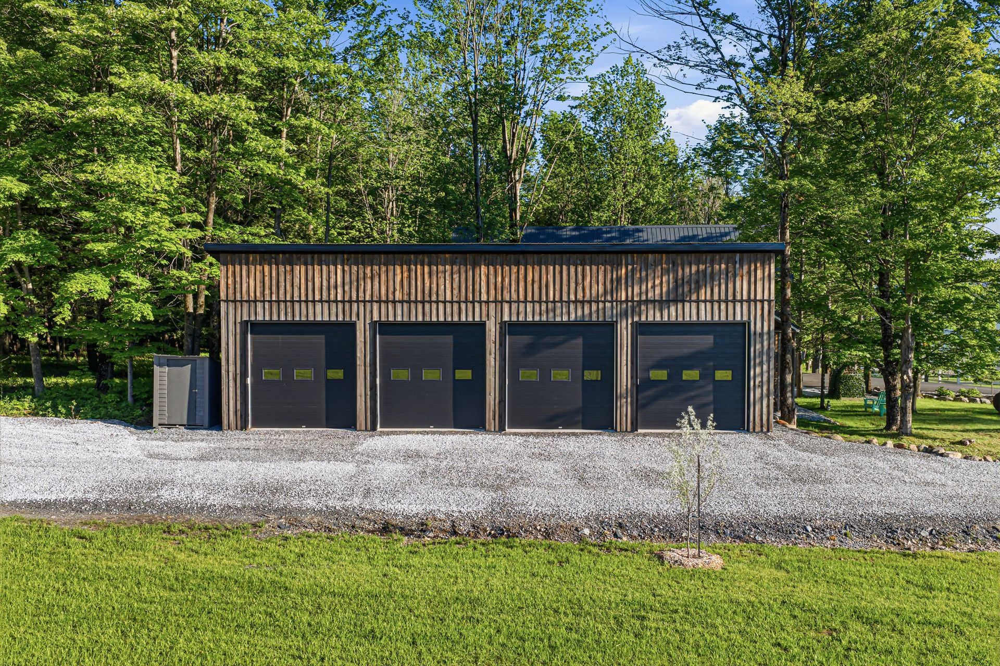
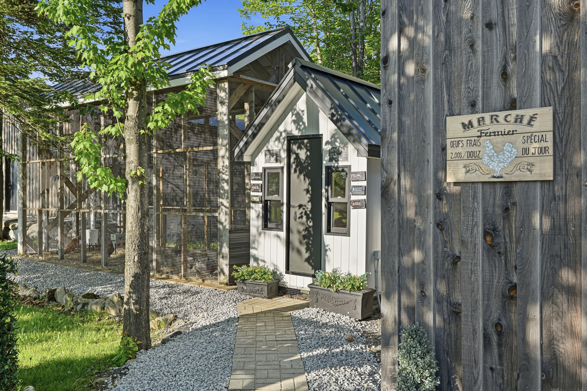

La Grange
Bâtiment patrimonial agrandi et rénové en profondeur — section cathédrale de 17 pieds très fenestrée, cuisine complète, dortoir aménagé et poutres d'origine.

Cantons-de-l'Est · Québec
151,85 acres · Lac privé · Résidence signature 2022
16 000 000 $
1155-1157, chemin Dymond, Dunham (Québec)
Un monde en soi
Au cœur des Cantons-de-l'Est, aux abords de la route des vins de Dunham, le Domaine Dymond déploie 151,85 acres de lavande, de vergers, de forêt aménagée et de plans d'eau autour d'un lac privé. Un territoire clôturé, parcouru de sentiers, façonné avec patience pour accueillir plusieurs générations à la fois.
Douze bâtiments s'y répondent — de la résidence contemporaine de calibre ultra-luxe érigée en 2022 à la maison patrimoniale de 1880 — dans une autonomie complète : géothermie, génératrices, fibre optique, électricité souterraine. Un projet de vie, prêt à être transmis.

La résidence principale · 2022
Œuvre maîtresse du domaine, Le Phare a été érigé en 2022 et bénéficie de la garantie de maison neuve GCR. Sa façade arrière, entièrement composée d'un mur-rideau, ouvre 8 194 pi² d'espaces habitables sur le lac et les collines. Plafonds cathédrale de 17 pieds habillés de peuplier clair, bardeau de cèdre blanc de l'Est posé pièce par pièce, toiture d'acier : une architecture épurée, exécutée sans compromis.


Piscine intérieure sous un plafond de cèdre jaune, reliée au gymnase par une passerelle vitrée. Sauna de cèdre au quartz. À l'extérieur, une piscine à débordement en béton avec cascade et dalles chauffantes, un spa et une cuisine extérieure complète prolongent les saisons.


La résidence patrimoniale · vers 1880
Cœur historique du domaine, Le Chalet veille sur le territoire depuis près d'un siècle et demi. Entièrement repensé en 2007-2009 puis en 2020-2021, il conserve ses poutres d'époque sous un toit cathédrale, autour d'un îlot de granite de treize pieds.
Trois chambres, une galerie couverte de cinquante et un pieds, une piscine creusée au sel avec pavillon au bord du lac : la maison d'invités par excellence — ou un pied-à-terre plein de caractère pendant que la grande maison reçoit.


Un hameau complet
Dix bâtiments secondaires, chacun avec sa vocation, gravitent autour des deux résidences — logements d'appoint, ateliers, serre de production et garages. De quoi loger les invités, les passions et la machinerie d'un domaine qui se suffit à lui-même.


Bâtiment patrimonial agrandi et rénové en profondeur — section cathédrale de 17 pieds très fenestrée, cuisine complète, dortoir aménagé et poutres d'origine.
Loft tout confort de 1 560 pi² — cuisine équipée, foyer au gaz, dortoir à l'étage et terrasse couverte chauffée de 25 pieds.
Au bord du lac, cuisine d'été et salle d'eau sous un sol de terrazzo — l'espace de réception des après-midis de baignade.
Quatre voitures sur céramique à chauffage radiant, dalle époxy isolée et portes motorisées — la dernière construction du domaine.
Environ 30 × 60 pieds isolés et chauffés en qualité résidentielle, sous un plafond de 12 pieds — atelier, studio ou salle de jeu.
Serre de production de 70 pieds largement rénovée en 2025, avec puits indépendant, irrigation et porte motorisée.
Atelier de rangement isolé de 408 pi², système Proslat et porte de garage motorisée.
Dôme d'acier de 1 800 pi² sous 16 pieds de dégagement — l'entreposage grande capacité, raccordé à une génératrice.
Isolé et chauffé, quatre pondoirs et volière grillagée — les œufs frais du matin.
Remise à bois et matériaux d'époque — la mémoire agricole du domaine.
614 515 m² façonnés avec soin
En juin, la lavande fleurit sur l'ancienne production certifiée biologique. Le verger aligne pruniers, poiriers, pommiers, cerisiers, bleuets et camerises. La forêt, dotée d'un plan d'aménagement complet, s'ouvre sur des kilomètres de sentiers clôturés — et le lac attend, avec ses deux quais et son ponton électrique.


Une infrastructure invisible
Le domaine a été conçu pour la fiabilité absolue : tout est enfoui, doublé, filtré. On y vit hors réseau sans jamais y penser.
Cinq systèmes indépendants et cinq puits, dalle radiante et zonage pièce par pièce.
Démarrage automatique — dont une couvrant l'entièreté de la résidence principale.
Dans tous les bâtiments habitables, avec réseau électrique souterrain sur l'ensemble du domaine.
Entrée principale de 600 A et trois bornes de recharge 220 V pour véhicules électriques.
Puits artésiens, adoucisseurs et filtration; irrigation de l'allée centrale et des jardins.
Éclairage, stores, rideaux encastrés, moustiquaires motorisées et caméras — pilotés du bout des doigts.
Le domaine en images

Dunham · Brome-Missisquoi
Le domaine s'insère dans le paysage vallonné de Dunham, premier terroir viticole du Québec, à quelques minutes des vignobles, des vergers et du village. Bromont et ses pistes sont à un quart d'heure; Montréal, à moins d'une heure trente; la frontière du Vermont, à dix minutes.

Visites privées sur rendez-vous
La propriété se visite sur rendez-vous, sur présentation d'une préqualification. Notre équipe vous accompagne en toute confidentialité, en français comme en anglais.
16 000 000 $ CAD
Planifier une visite privée